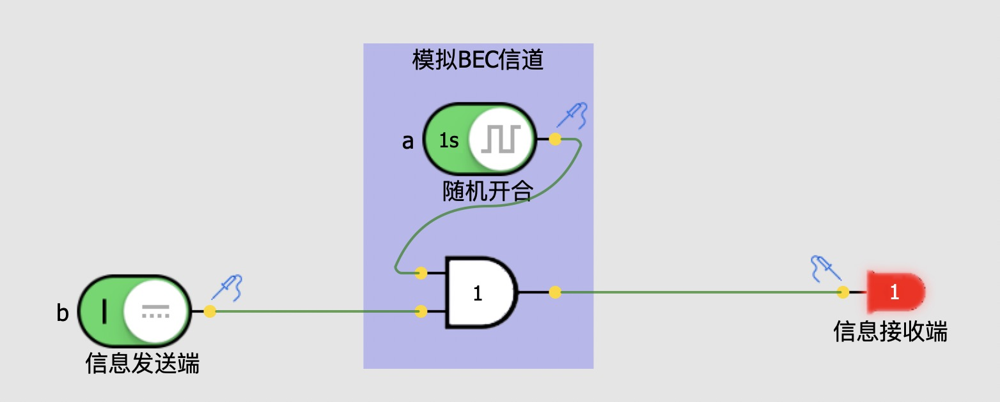
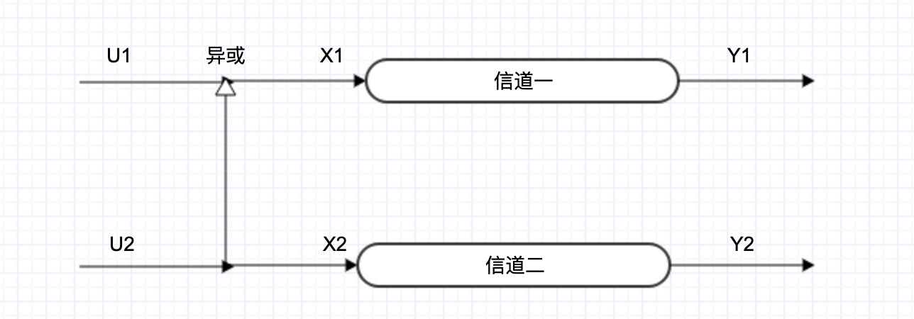
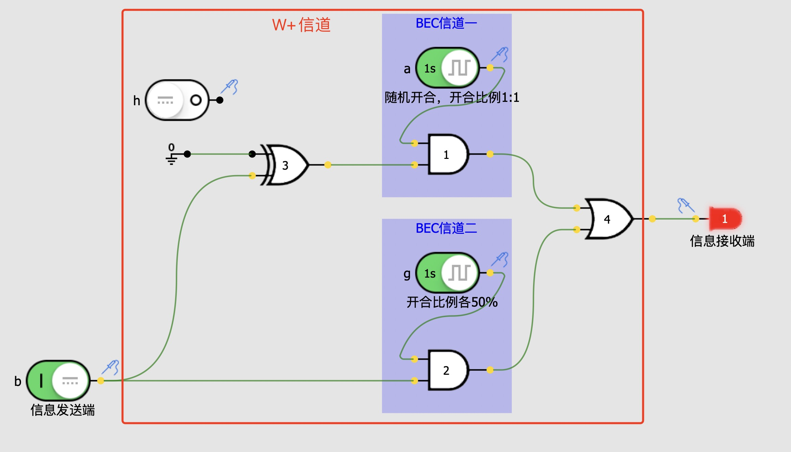
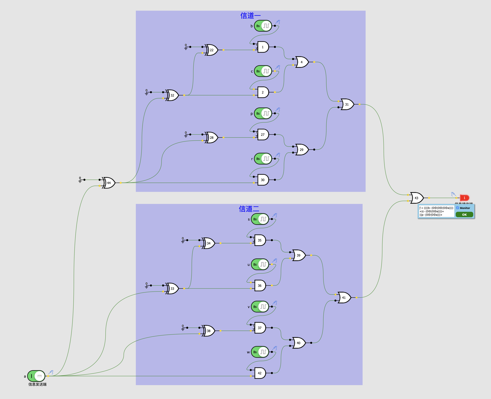

极化码理解
在看了b站up主老奇好好奇的视频《5G，华为，土耳其——我花了两个月，搞懂了5G背后的秘密》后，有很多感触，将自己的思考与理解记录下来！
从信息发出到信息接收，需要传输信息的通道，即信道，为了让信息更好的在信道里传输，需要对信息进行编码。
通过正确编码，有可能通过该信道以速率C传送信息，而错误频率或疑义度可以小到令人满意。而这一表述对于任何大于C的速率都是不成立的。如果尝试以一个高于C的速率进行传送，比如C+R1，则必然存在一个等于或大于R1的疑义度
因为有噪声的存在，永远都无法完完全全准确无误的传送信息，我们只能以「错误频率或疑义度可以小到令人满意」的程度传输信息。接收方正确还原发送方发送消息能力的上限称为信道容量C。我们只能以小于C的信息速率进行信息传输，同时差错率要令人满意，超过C会带来更多的错误频率或疑义度。这就是香农极限。
香农极限：在会随机发生误码的信道上进行无差错传输的最大传输速率
而极化码这种编码方式的信道可以让信道容量C尽可能的大，在会随机发生误码的信道上进行无差错传输时，传输速率尽可能的大（香农极限）
逐步理解：
目标是（香农极限），在有噪信道编码中，找出一种编码方式的信道，该信道的信道容量尽可能的大
BEC信道（Binary Erasure Channel）二进制擦除信道，信道特点：接收端完全收不到信息，或接收端收到正确的信息。为了更好的理解，我用一个开关来模拟信息发送端，用「时钟信号」加一个「与门」来模拟BEC信道，用一个LED灯泡来显示接收端收到的信号，如下图：

当时钟信号为1时表示该BEC信道传输成功，接收端能正确接收到发送端的信号，当时钟信号为0时表示该BEC信道传输失败，接收端完全收不到信息。令该BEC信道传输失败的概率为P，那该信道传输成功的概率就为1-P。
目标是，在有噪信道编码中，找出一种编码方式的信道，该信道的P尽可能的接近0
Arikan用两个BEC信道，进行这样的组合

要得到U1的信息
已知：
Y2=X2=U2 and Y1=X1=U1⊕U2
则
U1=U2⊕Y1=Y2⊕Y1
也就是说，要得到U1，必须要同时得到Y1和Y2，即通道一和通道二同时传输成功。单个BEC信道传输失败的概率为P，假设为0.5，那单个BEC信道传输成功的概率为1-P=0.5，则通道一和通道二同时传输成功的概率为：(1-P)^2=0.25，该组合对于U1信息来说是W-信道
要得到U2的信息
已知：
U2=X2=Y2 and X1=U1⊕U2 and X1=Y1
则
U2=Y2 or U2=X1⊕U1=Y1⊕U1
也就是说，要得到U2，只要通道二传输成功，或者通道一传输成功并且知道U1，于是事先约定好U1，则要得到U2，只要通道一或者通道二其中一个传输成功即可，概率为1-P*P=0.75，该组合对于U2信息来说是W+信道
于是得到了一个比基础信道BEC信道传输成功率高的W+信道，逻辑仿真如下：

BEC信道一和BEC信道二其中只要有一个成功接通，发送端的信息就能准确的传输给接收端，可能有人会问仿真中异或门3的一个输入端为何接地，这是因为这里相当于U1，事先约定好的U1，可以输入任何预定的信息，接地0电位是因为0与任意数n异或都还是得到n本身。
再将W+作为基础信道，进行相同的组合，类似函数的嵌套y1=f(x)，y2=f(f(x))，y3=f(f(f(x)))……，也类似深度神经网络的反向传播。
为了方便的理解，我将这种嵌套做了逻辑仿真，相信还没理解的同学一看就明白：

只有当b、c、p、r、s、u、v、w 8个子通道同时传输失败时，发送端的信息才不正确的传输到接收端，单个传输失败的概率P=0.5，则该组合信道传输失败的概率为(1/2)^8=1/256~=0.0039，如视频中所述。
仿真软件中也给出了最后接收端收到信息的表达式
ƒ = ((((b∙(0⊕(0⊕(0⊕a))))+(c∙(0⊕(0⊕a))))+((p∙(0⊕(0⊕a)))+(r∙(0⊕a))))+(((s∙(0⊕(0⊕a)))+(u∙(0⊕a)))+((v∙(0⊕a))+(w∙a))))